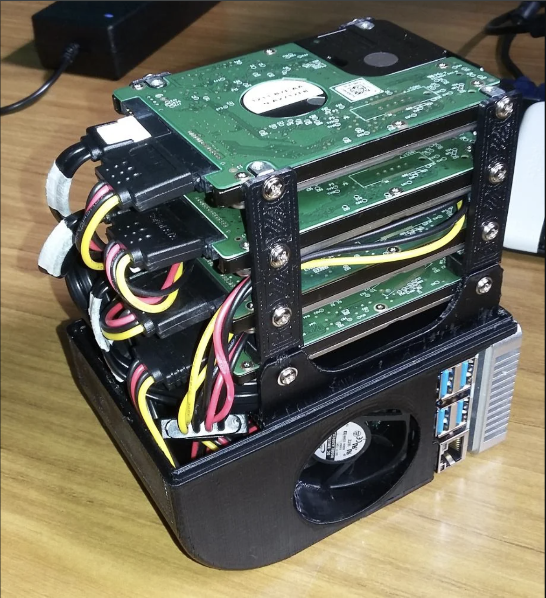

This project was built during early college as a home network storage system for my family. I used a Raspberry Pi 4, a SATA HAT interface, and a set of four old hard drives to create a network-attached storage server with approximately 4TB of usable storage.
The goal was to create one central place where our family could store and access old photos, videos, and media from any device connected to the home network. I converted old DVDs, camcorder footage, files from older phones, and data from old laptops into digital files and organized them on the NAS.
I also configured the system to act as a Plex server for movies and media playback, all packaged inside an acrylic housing.

The Raspberry Pi 4 acted as the central controller and server. The SATA HAT allowed multiple hard drives to connect to the Pi, turning it into a compact network-attached storage system. Once configured, the NAS could be accessed by devices on the home network for file storage, browsing, and media playback.
One major part of the project was data migration. I gathered media from old DVDs, video camera recordings, old phones, and old laptops, converted the files into digital formats, and organized them into a shared family archive.
The Plex server added another layer of functionality by allowing the same system to serve movies and media across the network.
/Family-NAS
/Photos
/Old-Phones
/Family-Events
/Scanned-Memories
/Videos
/Camcorder-Footage
/DVD-Rips
/Home-Videos
/Plex-Media
/Movies
/ShowsThis project taught me how useful engineering can be when applied to everyday problems. Instead of family memories being spread across DVDs, old phones, and aging laptops, I created a central system that made those files easier to preserve and access. It also gave me hands-on experience with servers, storage, networking, and practical system integration.